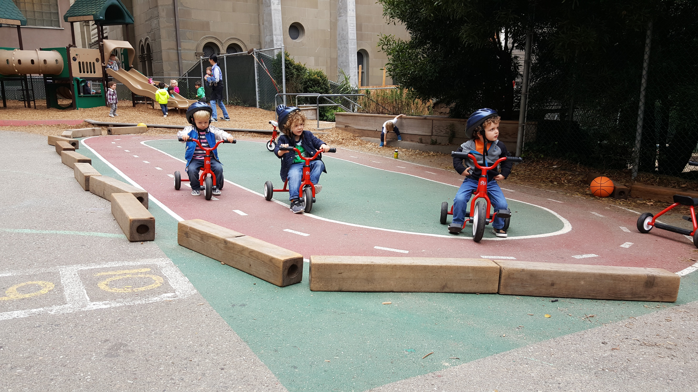

Marin Day Schools | Bright Horizons
Project Task
The main task for this project was to improve the outdoor educational space for MDS, a child development center located
in the heart of San Francisco. To achieve this, participation from the children and families was encouraged in the form of donating
recyclable materials, and incorprating lessons about recycling and sustainablity in the daily curriculum.
- Team: Individual
- Timeframe: 8 Weeks
Background
Have you ever wondered what outdoor curriculum looks like in an urban setting? With so many limitations, it is much
harder for a child in an urban school to have access to plants, grass, trees, and even flowers. In a preschool, it is an
understatement to say that challenging behaviors are common. Children deal with separation anxiety, social anxiety,
speech delays, attention deficit, sensory integration issues, illnesses, and potentially different forms of autism.
There are many benefits to outdoor spaces in a preschool setting but for those schools who lack in natural spaces those
opportunities for children become fewer. “Regular exposure to green settings would not have any of the negative
side-effects associated with medications—and if an afternoon or evening dose of “nature” instead of medication provided
adequate relief, perhaps that would allow children to recover their appetite in time for dinner and get a good night's
sleep on a regular basis.”
The school where this project was facilitated had a decent sized outdoor space for the children. There was a
sandbox below some stairs, the main level of the yard which had a large play structure, a bike track, and a sensory bin
for water play. The entire school was not able to play outside at the same time due to licensing restrictions. Each age
group consists of two classes, so each group of classes will take their turn on the yard two times during the day adding
up to two hours of outside time per day. With this observation, it became clear that the children lacked opportunities
to interact with nature and natural resources. Six small barrel planters were added to the yard and the children initially
responded very well, but it was still not enough space to successfully grow and plants. The purpose of this case study will be to develop a
natural outdoor learning space for the children at MDS.

Method
Participants:
Marin Day Schools itself is a non-profit organization that focuses on providing high quality education. The faculty and
staff come from various ethnic backgrounds and have education in a variety of subjects such as arts, kinesiology, child
development, special education, nursing, and business. Marin Day Schools has many locations around the bay area. The
participants of this project were the children, parents, and families enrolled at MDS. Many of the families come from
high socio-economic backgrounds or have occupations with high incomes. The families that participated come from a
variety of ethnic backgrounds.
Location:
The location of this school was a part of a Jewish congregation called Sherith Israel in Pacific Heights,
San Francisco. The location is known to be a more affluent neighborhood which would reflect the high-income jobs that
the parents have. I began to do my observations in the classroom and moved toward the situation of the outdoor space.
The data I collected reflected how much the parents participated in the project and the progress to be able to build
the planter boxes. The school is located in an urban setting surrounded by hospitals and businesses.
Materials:
The materials used for this project were two large storage bins that would be used to collect the recyclable materials,
garbage bags that would be used to sort the materials, and a car to transport the materials to the recycling center. A
tracking sheet was used to document how much was earned from the recycling center and how much was spent on the
materials needed to build each planter box. A progress tracker was put on display for the families to be able to observe
how far along we were in donations and how much more we needed to complete the project.


Procedure:
When beginning this project, I first reached out to my director at MDS about doing a service project. We then discussed
what we felt would be the best use of my time and how to make the most of the service project. We had both previously
done an outdoor education training together and we decided that me facilitation an outdoor education project would be
the best direction to go in. From there she contacted the regional manager to be informed if there would be any
conflicts about holding a fundraiser and any policy procedures that I would need to follow. With no restrictions, I was
able to draft a letter to the parents explaining that we will be collecting glass, cans, and plastic bottles and cashing
them in for money to purchase supplies to build planter boxes for the yard.
As parents began donating, I would
personally sort out the materials and bring them to the recycling centers. I previously purchased the materials to build
the boxes and estimated the cost for each box after the first one was built. When enough materials were donated to
compensate for the cost of the first box, I then was able to bring it to the school. The following boxes will follow
that same procedure. With the box in the yard, the pre-K children were able to paint the box to make it more appealing.
Each class will be able to paint their own planter box prior to filling it with soil and plants.
Limitations: The limitations that were found with this project was to be able to complete everything by the end of the summer quarter. I couldn’t have anticipated how many parents would have participated as well as how many parents would give monetary donations. Also, the scale for cash redemption is not the same for each recyclable material. Each can, bottle, or glass bottle, is worth a different amount which made estimating how many of each we needed difficult. For future action, or improvements on this project in other centers, I would suggest building a box to estimate the cost ahead of time. With that, the parents can know how much each box will cost and opening the option for monetary donations at the start of the project. This project helped to raise the quality of our outdoor education at the school and provide an enriching space for the children.

Results:
The first part of the project, where materials were only being collected, received a generous response. The idea that we
were trying to raise money through recycled materials raised questions for many of the parents who assumed it would be
easier to simply give me the money to build the planter boxes. Indeed, that would have been quicker, but the idea was to
raise the money in a sustainable and environmentally friendly way since it would be given back with a garden in its
place. One parent stated, “How much does she want?” It was overwhelming to have the support of the parents and they
understood the importance of being able to have their children witness the importance of environmental awareness.
Parents have asked for options to donate money instead of cans or bottles, just for the fact that it would be easier
than remembering to bring in recyclable materials. After a discussion with my director about how that needed to be
maintained, we offered a donation box which was well received by the parents.
The second part of the project was a learning experience for me personally. This was the first time I was collecting
materials and bringing them to a recycling center. I started off by sorting the bottles, from the cans, from the glass.
The first trip I took, I learned that dark colored bottles used to hold juices or wines are not accepted for cash
redemption. I also learned that clear glass must be separated from the colored glass bottles that are used for beer and
water. The second trip I took to the recycling center, the workers explained that all the bottle tops from the plastic
bottles must be removed ahead of time. This prevents damage to the machines that they use. From that point, I was able
to sort everything out ahead of time. With each cash return from the materials and cash donation, it was written down on
a tracking sheet that was kept in the director’s desk to keep track of our progress.

Conclusion:
My takeaway from this service-learning project was that there are so many ways to get involved and there is nothing a
child could need enough of to make their learning experience better. This was a great example to teach children the
importance of sustainability, being environmentally aware, and how to create something new out of recycled materials.

References:
- Blair, D. (2009). The child in the garden: An evaluative review of the benefits of school gardening. The Journal of Environmental Education, 40(2), 15-38. doi:http://dx.doi.org.proxylib.csueastbay.edu/10.3200/JOEE.40.2.15-38
- Baptist, K. (2002). The Garden as Metaphor for Curriculum. Teacher Education Quarterly, 29(4), 19-37. Retrieved from http://www.jstor.org.proxylib.csueastbay.edu/stable/23478449
- Taylor, A. F., & Kuo, F. E. (. (2011). Could exposure to everyday green spaces help treat ADHD? evidence from children's play settings.Applied Psychology: Health and Well-being,3(3), 281-303. doi:http://dx.doi.org.proxylib.csueastbay.edu/10.1111/j.1758-0854.2011.01052.x